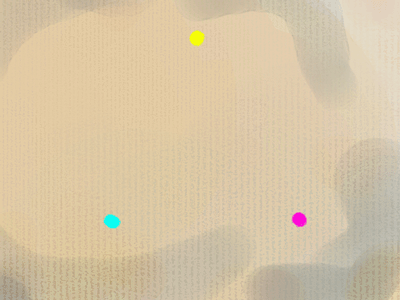

La
synthèse soustractive

L'animation ci-contre présente les couleurs (le
spectre visible, l'arc-en-ciel) sous la forme d'un cercle.
On peut affirmer que naturellement, sans ajout ni compensation
d'aucune sorte,
* une partie de ce spectre, entourant les jaunes, de l'orangé au jaune-vert, est claire
* la partie opposée, du magenta au bleu, est sombre
* la
zone vert-cyan et la zone des rouges sont d'une clarté moyenne.
Ces données sont fondamentales et objectives (sauf à juger de ce qui est
rouge, jaune, bleu, etc.). Elles ont beaucoup
d'importance dans la détermination des contrastes et par-delà, dans la
composition de toutes les oeuvres picturales.
Par contre, le fait de considérer telle ou telle
couleur comme froide ou chaude est du domaine subjectif (voir plus
loin).
Le point de vue scientifique ne nous
éclaire pratiquement pas - sans jeu de mot - : il nous indique que les couleurs
les plus énergétiques sont les bleus (ou les violets si l'on veut), à une longueur d'onde de 400 nanomètres, et les moins
porteuses d'énergie, les rouges, à 750 ou 800 nanomètres. C'est une différence notable, du simple au double
d'énergie ! Mais la seule chose que nous puissions retenir de ces données
(peuvent-elles avoir une portée artistique ?),
c'est que la couleur rouge est celle qui
fatigue le moins la rétine. Les astronomes
amateurs ne l'ignorent pas, eux qui consultent leurs cartes célestes à la
lueur d'une lampe de poche bardée d'un filtre rouge pour préserver l'acuité
de leur vision nocturne.
Cependant, peut-être pour des raisons
cognitives, le rouge serait la couleur qui
impressionnerait le plus vite la rétine et celle qui serait aperçue en premier
même à distance (information non confirmée).
Une autre considération scientifique,
plus physiologique, nous indique une particularité de la vision humaine qui a
été exploitée par de nombreux peintres : dans la pénombre, nous ne
distinguons pratiquement pas les couleurs. L'intérêt de cette constatation est
que nous percevons beaucoup mieux les
contrastes de valeurs d'un tableau dans la pénombre.
Certaines évidences se révèlent alors.
Les couleurs dites "primaires" (par convention) permettent théoriquement de reconstituer par mélange
n'importe quelle couleur du spectre. En fait, c'est faux mais nous y
reviendrons. Elles sont trois :
* le
jaune pur, ni verdâtre ni rougeâtre. Le jaune citron
(qui tire souvent sur le vert dans les interprétations des fabricants) ne peut pas faire office de jaune primaire : il salirait les mélanges.
* le magenta , sorte de mauve (rouge nettement violacé), souvent assimilé à
tort à un rouge.
* le
cyan , sorte de bleu-vert.
Elles ne peuvent théoriquement pas être elles-mêmes reconstituées par
mélange. Cette affirmation concerne en fait des concepts scientifiques et non
des pigments.
La nature ne met pas à notre disposition des pigments correspondant
exactement ou même inexactement aux primaires. Par conséquent, on ne peut se
rapprocher de celles-ci que par des mélanges, sauf en ce qui concerne le jaune -
ou disons plutôt une approximation de jaune -, qui peut difficilement être
synthétisé par mélange.
Il est tout à fait
possible par contre de reconstituer une approximation de cyan (bleu + vert-jaune) ou
de
magenta (rouge + bleu-violet).
Le fait est : la nature ne met pas à notre disposition les exactes couleurs
primaires sous forme de pigments. Donc, c'est un comble mais c'est une
réalité : pour essayer de concrétiser le concept des couleurs primaires, il faut
recourir à des mélanges.
Cette constatation prend toute sa valeur lorsqu'il
s'agit de constituer une palette de couleurs (lire exemple de base pour une palette).
Les couleurs secondaires (obtenues par la combinaison de paires de
primaires) sont :
-
l'orangé et
le rouge (jaune + magenta)
-
le violet et
le bleu (cyan + magenta)
-
le vert et
le vert-jaune (cyan + jaune).
La combinaison de couleurs secondaires fabriquées à l'aide
de couleurs "primaires" ou d'autres mélanges peut donner des résultats assez
sales. Important : à partir d'un certain degré de
mélange de couleurs multiples, les éléments constitutifs des mélanges finissent par interférer
et grisailler (voir Couleurs monopigmentaires et
pluripigmentaires et plus loin, Règles physiques
fondamentales).
Chaudes et froides
Les concepts communs de froid et de chaud ne sont pas objectifs car ils sont avant tout une
transposition de sensations subjectives provenant d'un autre domaine sensitif,
la perception des températures, sans aucun rapport, précisons-le, avec le concept physique de
température de couleur par rapport au corps noir. Il ne s'agit que
d'impressions de correspondances ressenties par chacun, de tendances plus ou moins admises par tous.
Si l'on trace mentalement une ligne
diagonale partant
aux environs du vert-jaune
et rejoignant de l'autre côté du cercle chromatique la zone située entre le rouge et le violet, on peut visualiser l'une des répartitions les plus classiques entre couleurs chaudes,
en haut à droite sur la
figure ci-dessus, et froides, en bas à gauche.
Les choses se gâtent lorsque l'on parle
des couleurs neutres. Certains peintres
considèrent que le vert-jaune est chaud, d'autres avancent que le violet
constitue la zone frontière, neutre, alors que beaucoup attribuent le même
titre à la garance et considèrent le vert-jaune
comme une couleur très fraîche.
Certains essayent de se représenter le
chaud et le froid d'une manière symbolique tendant à l'universalisme. C'est
cependant une chimère : telle personne estime que c'est le jaune, semblable au
soleil, qui "représenterait" la couleur chaude par excellence... mais pour telle
autre personne, c'est le rouge, qui évoque le fer rouge, la braise, la chair.
Deux affirmations sont cependant admises
par tous
: aux abords de l'orangé, c'est chaud ; autour du bleu, c'est froid.

Règles physiques
fondamentales
(théorie de
Chevreul)
La théorie de Chevreul (De la loi du contraste
simultané des couleurs et de l'assortiment des objets colorés, 1839, Paris)
est un volumineux mémoire scientifique - non loin de 750 pages, l'auteur
dissertant longuement sur les applications déjà multiples à l'époque.
C'est-à-dire que les peintres qui ont profondément marqué l'histoire de l'art
aux XIX et XXème siècles (on citera en particulier les
impressionnistes et les divisionnistes mais aussi Delacroix avant eux) en
s'inspirant en partie de cette théorie ont peut-être, pour certains, eu la
chance d'assister aux conférences publiques de ce grand savant, mais pour la
plupart ils n'auront connu cette oeuvre que partiellement et indirectement.
Qu'à cela ne tienne, Chevreul a été compris des
artistes et sa contribution scientifique aux arts picturaux (entre autres) fut
considérable.
L'histoire l'a un peu oublié - à tort : que seraient
nos ordinateurs, nos télévisions et nos impressions quadrichromiques sans son
travail sur la synthèse de couleurs ? -, pourtant cet homme a joui d'une
reconnaissance et d'une célébrité internationales de son vivant (1786-1889, soit
103 ans), mais - ironie du sort - davantage pour son patient travail de chimiste
sur les corps gras et la thématique de la
saponification, thématique qu'il n'est pas tout à fait parvenu à...
synthétiser.
Bien entendu, la recherche sur les synthèses et la
perception des couleurs ne s'arrête pas à Chevreul mais pour le moment, évoquons
quant à nous quelques principes qu'il a édictés :
* Dans une combinaison, plus les couleurs sont
éloignées sur le cercle chromatique, plus elles
s'annulent et grisaillent (cf. couleurs
monopigmentaires et pluripigmentaires). Pour faire court, disons que cela donne
une teinte "marronnasse" lorsque les chaudes
dominent , du "caca
d'oie" lorsque apparaissent des froides. Mais attention : malgré
ces intitulés méprisants, ces couleurs ne sont
pas à rejeter. Elles permettent les associations les plus subtiles,
parfois joyeuses,
notamment dans les valeurs très claires, les carnations, les ciels, les ors et
les autres métaux, les bois, les terres, etc.
* Les combinaisons les plus éloignées (se
situant à 180° l'une de l'autre sur le cercle) sont dites
complémentaires. Unies en proportions égales, à propriétés
couvrantes et colorantes égales, elles s'annulent, donnant un gris
plus ou moins clair.
* Les trois couleurs
primaires mêlées donnent également un gris neutre.
* Chevreul indique que "lorsque
l'oeil voit deux couleurs contiguës,
il les voit les plus dissemblables possible. Ce contraste provient à la fois de
la tonalité et de la luminosité des couleurs." Le contraste des valeurs s'ajoute
donc au contraste des
couleurs. L'oeil se sert de tous les critères possibles pour distinguer les
moindres nuances, les plus petites variations.
* Le plus fort contraste possible est la combinaison
BLEU-ORANGÉ
car c'est entre ces deux complémentaires qu'il
existe le plus fort contraste de valeurs en plus du contraste de couleurs,
toute variation des valeurs par l'adjonction de blanc, de noir, ou d'un jeu de
transparence étant ici mise de côté. Chevreul évoque les caractéristiques
intrinsèques de couleurs.

Pour toutes ces raisons, le bleu et le violet obtenus par mélanges de
primaires ne sont ni clairs ni purs, de même que certains rouges, décevants (un rouge vermillon
obtenu par jaune + magenta est bien terne), et les orangés, particulièrement
problématiques en quadrichromie, dit-on. Les
associations de couleurs
primaires ou de toutes couleurs disposées à 120° l'une de l'autre sur le
cercle chromatique, voire moins, donnent en général (il existe d'assez
nombreuses exceptions mais il s'agit ici d'exposer une tendance) des résultats plutôt impurs,
particulièrement handicapants dans la zone sombre du spectre où les mélanges noircissent
facilement. Dans la zone claire, sous l'empire du jaune, véritable soleil du
cercle chromatique, nous obtenons d'assez beaux verts-jaunes et jaunes-orangés.
Il est donc nécessaire de recourir à d'autres couleurs de base
bien choisies pour les
mélanges, d'autant plus que les catégories chromatiques "jaune, violet,
bleu, rouge, etc.", sont produites par des pigments matériels qui ont des capacités limitées par les propriétés des
éléments moléculaires qui les composent : certains jaunes vendus
dans le commerce comme "primaires" sont trop peu colorants pour donner
de bons résultats dans les mélanges. Certains magentas sont très colorants
mais pas assez couvrants ou trop fugaces, etc.
Voir exemple de base pour une palette.
Combinaisons ternaires ou plus
complexes
Dans la combinaison ternaire "basique"
(que l'on apprend parfois à l'école), nous associons les trois primaires en
quantités différentes. Dans les faits, le peintre qui en arrive aux mélanges
de trois couleurs n'utilise déjà plus les primaires (sauf le jaune, souvent un cadmium clair ou un
azoïque) mais plutôt des pigments purs non mélangés parfois très éloignés
les uns des autres.
Il s'agit
* de créer des ocres particuliers, des verts subtils, etc. et surtout
de les décliner et les altérer considérablement.
Un fondu vers une couleur pure devient aisé, facile à contrôler dans le
détail.
Exemple : jaune de cadmium clair + vermillon + une note de bleu
outremer foncé = un ocre situé entre l'ocre jaune et la Sienne brûlée
selon la quantité de vermillon, ou bien une Sienne naturelle
particulièrement grise à mesure que l'on rajoute de l'outremer. La gamme
des "terres" peut être parcourue aisément en direction d'une
vive ou d'une autre terre : il suffit de jouer à volonté sur l'une trois
composantes. La même opération est plus difficile à réaliser à l'aide
d'une terre + une seule vive, mélange propice aux dégradés simples.
En travaillant alla prima, le
peintre peut s'amuser à révéler par une imperfection provoquée la
véritable nature de l'ocre apparemment tranquille qu'il nous offre à
contempler.
* de donner un aspect unifié à la surface picturale. L'emploi, même en faible quantité, d'une couleur
omniprésente parmi tous les mélanges donne une grande solidité à la
composition chromatique. Un résultat approchant peut être obtenu par la
pose de glacis terminaux, plus sûre sur le plan
chimique (elle restreint la quantité d'interactions).
HARMONIE
L'artiste pictural crée des harmonies de teintes juxtaposées dans l'espace,
parfois dans le temps. Des
sortes d'accords de couleurs.
Certains auteurs se sont spécialisés dans les
théories harmoniques, énumérant les "accords" à 3, 4 ou 5 couleurs. Il est
vrai qu'un rapprochement avec la théorie de la musique n'est pas forcément sans
pertinence. Lumière et sons sont des phénomènes ondulatoires qui ont bien sûr
des points communs. A commencer par ce que l'on nomme les harmoniques.
Une corde, lorsqu'elle est effleurée en certains points précis de sa longueur
et mise en vibration, va livrer un son bien net dont la fréquence est une
fraction "harmonique" de celle de la corde entière. Elle sonnera de manière
clairement identifiable l'octave (à mi-longueur), la quinte juste et la tierce
majeure (plus une octave) à d'autres positions, ainsi que d'autres intervalles à
d'autres distances, mais moins clairement. La tierce, la quinte et l'octave
représentent ce que l'on nomme des consonantes, des harmonies à la fois
classiques et naturelles (pas tout à fait naturelles dans le cas du clavier
tempéré, mais c'est un autre sujet).
Qu'en est-il en ce qui concerne les couleurs ? Le peintre, le photographe, le
vidéaste n'ont aucun des repères de positionnement dont disposent les artistes
du son. Il n'y a pas de corde pour donner une longueur d'onde à la lumière. Et
que serait un accord majeur en peinture ? La chose est calculable mais c'est
d'autant plus difficile à concevoir naturellement que le bleu serait peu ou prou
l'octave du rouge (400 nm = 800 nm / 2), ce qui rend l'intégralité des couleurs
visibles comparable à une seule et unique gamme
musicale ! "L'octave chromatique" existe mais elle est à la limite de
notre perception. De plus elle est fixe alors qu'un intervalle musical est
glissant.
Ainsi on identifie aisément l'octave d'une note "à l'oreille", mais
qui reconnaîtrait dans le bleu l'octave du rouge ?
Et que comprendrions-nous à la musique si nos oreilles pouvaient à peine
entendre un intervalle d'une octave immuablement fixée ? Nous verrions
probablement l'univers sonore comme un tout fermé, comme nous le faisons dans le
domaine des couleurs ("cercle chromatique"). Nous dirions peut-être que le si
est la note la plus froide et le do la plus chaude, sans comprendre
intuitivement comme c'est le cas en musique qu'il existe des si et des do plus
chauds et plus froids à l'infini.
Disons-nous "votre ré est saignant", "son si est d'une froideur", "ce la est
tellement chic" ? Les notes sont si innombrables qu'elles sont incapables de
porter une signification alors que chaque couleur est unique. Voilà toute la
différence. Nous accordons une infinité de significations symboliques à telle ou
telle couleur alors qu'il est bien rare que nous en fassions de même avec une
note.
Pour donner une image forte, outrée, on pourrait (partiellement) comparer les
artistes picturaux à des musiciens qui joueraient avec un ocarina devant un
public qui ne serait de toute façon pas en mesure d'envisager le concept
cyclique et structurant de gamme. C'est
l'un des points de vue par lesquels nous pouvons entrevoir tout l'art du véritable
"coloriste", qui ne
se borne pas à chamarrer son oeuvre n'importe
comment mais qui conçoit et met en oeuvre, à force de travail et avec son
intuition, ce qui est harmonique, harmonieux, dissonant, consonnant, etc., à
travers une toute petite fenêtre de fréquences visibles. Un travail qui évoque
celui du sourd mais génial Ludwig van Beethoven. Partitions et claviers de
pianos en moins, valeurs et significations en plus.
Retour
début de page